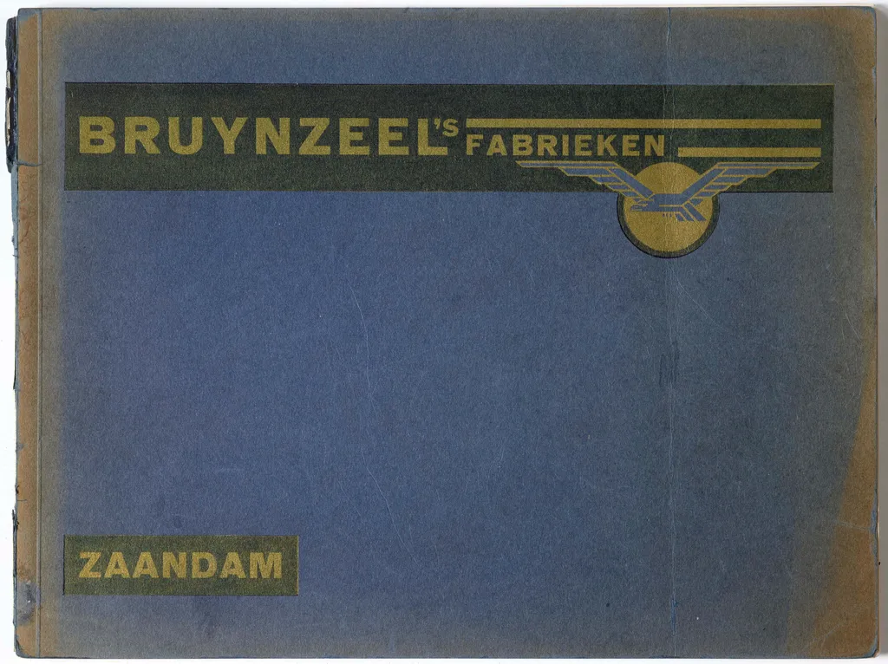
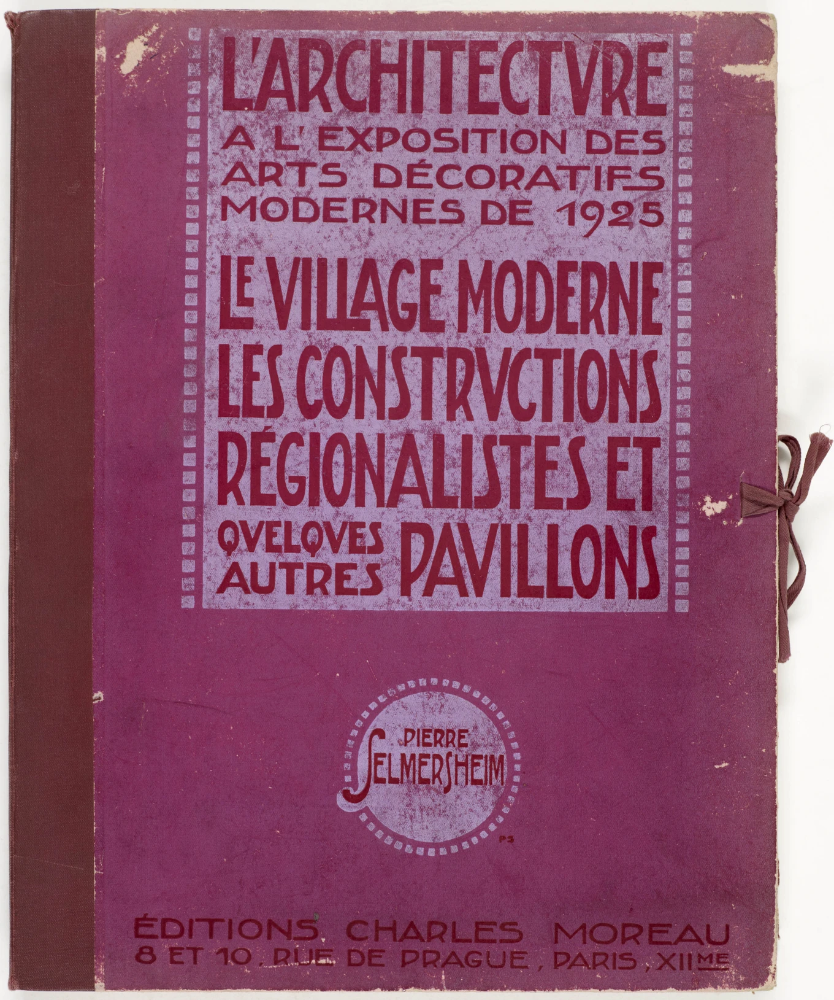
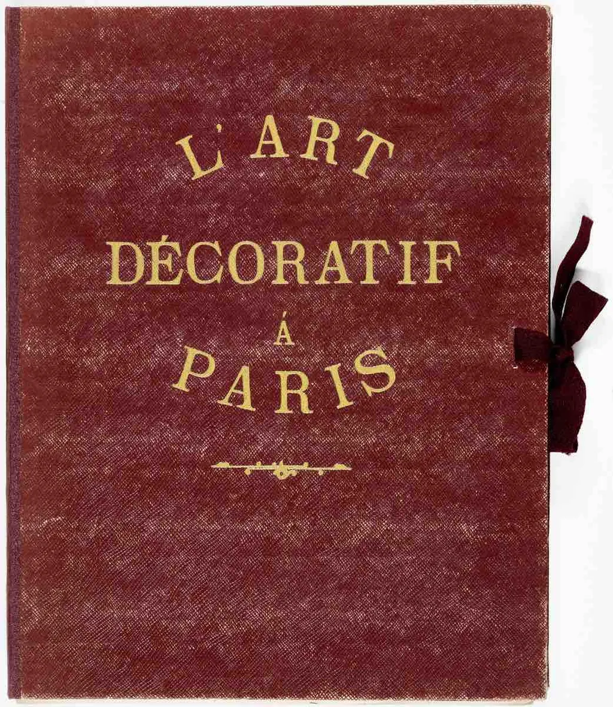
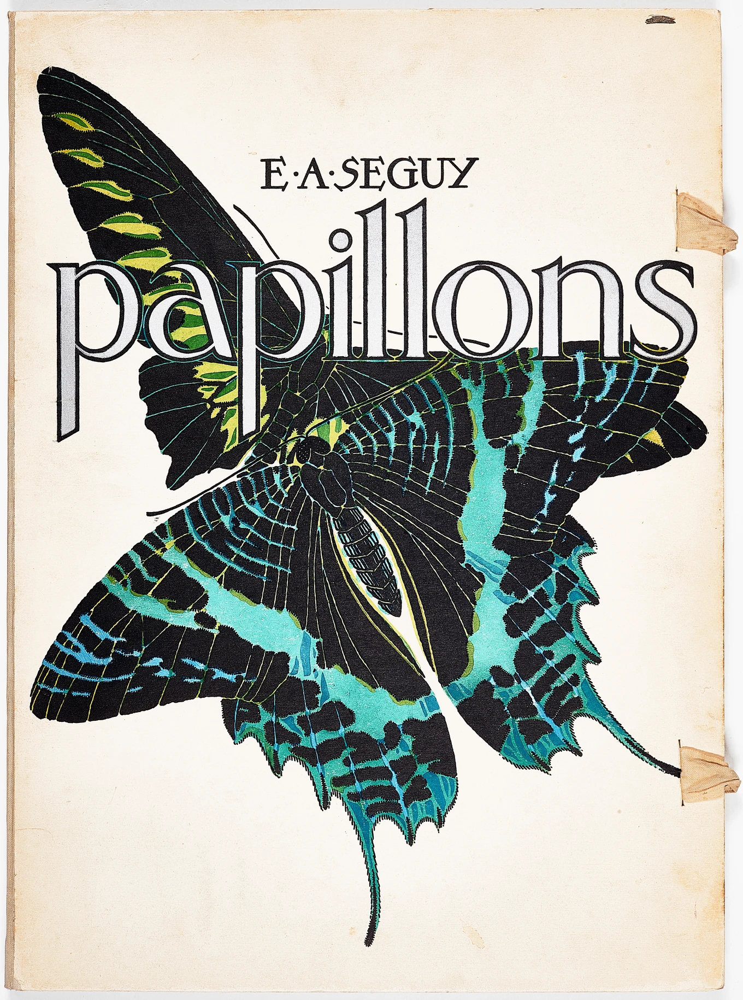
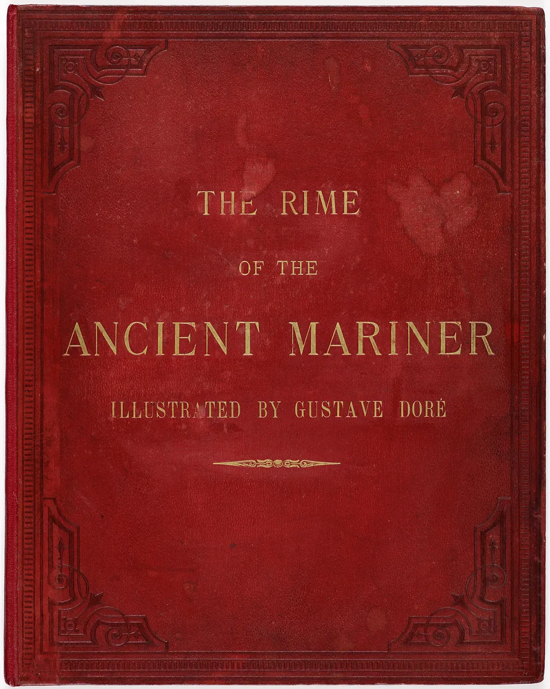

Bruynzeel's Fabrieken, 1931
Vilmos Huszár, founding member of De Stijl, combines photography and typography to tell the history of the Bruynzeel wood factory in this promotional album.
Industrial Design, 1940
An early consulting designer, Harold Van Doren wrote this as a pragmatic how-to instructional, championing the principle of streamlining.

Insectes, c. 1925
A companion to Papillons, this portfolio takes insects as its subject. Séguy hoped artists and designers would be inspired by these abstracted scientific illustrations.

L'architecture, 1925
This portfolio includes plates that highlight the architecture on display at the 1925 Paris Exposition, including a modern village, regionalist constructions, and other pavilions.

L'art décoratif, 1928
Published after the 1925 Paris Exposition, this portfolio shows how modernist trends were diffused throughout the decorative arts in France.
Negro Drawings, 1927
Active in the Harlem Renaissance, Miguel Covarrubias produced this portfolio featuring his dynamic observations of dance halls, night clubs, and daily life in New York.

Papillons, c. 1925
Intending to inspire modern artists and designers, Emile-Allain Séguy juxtaposed scientifically precise renderings of butterflies and abstracted patterns based on their forms.

Ancient Mariner, 1876
Purchased by founder Micky Wolfson Jr., this copy features illustrations by French artist Gustave Doré. His gothic style was well-suited to Coleridge's romantic tale.
Une ambassade française, 1925
Interiors are shown as pochoir renderings followed by documentary photographs of the completed rooms for the suite exhibited at the 1925 Paris Exposition.
Volkswagen-Werk, 1938
This booklet illustrates not only the component parts of the "people's car" but also how the ideal German family might use the vehicle for recreation.